宝可梦图鉴：966 只可用伙伴
收录从关都到帕底亚的九个地区。通过选择最初的伙伴、地区抽取或击败野生异色宝可梦获得伙伴。下列名称均使用官方简体中文名称。
关都 第 1 世代 · 151 只
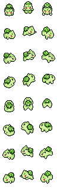
#001妙蛙种子草毒最初的伙伴 #002妙蛙草草毒
#002妙蛙草草毒 #003妙蛙花草毒
#003妙蛙花草毒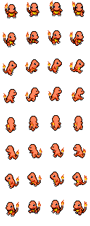
#004小火龙火最初的伙伴 #005火恐龙火
#005火恐龙火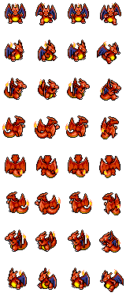
#006喷火龙火飞行 #007杰尼龟水最初的伙伴
#007杰尼龟水最初的伙伴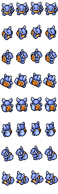
#008卡咪龟水 #009水箭龟水
#009水箭龟水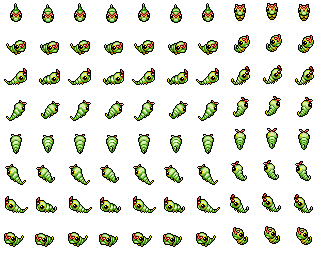
#010绿毛虫虫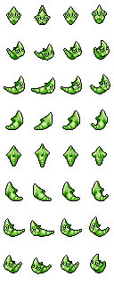
#011铁甲蛹虫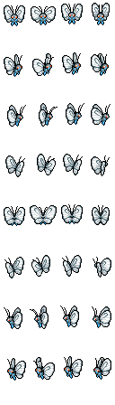
#012巴大蝶虫飞行 #013独角虫虫毒
#013独角虫虫毒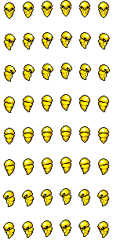
#014铁壳蛹虫毒 #015大针蜂虫毒
#015大针蜂虫毒 #016波波一般飞行
#016波波一般飞行 #017比比鸟一般飞行
#017比比鸟一般飞行 #018大比鸟一般飞行
#018大比鸟一般飞行 #019小拉达一般
#019小拉达一般 #020拉达一般
#020拉达一般 #021烈雀一般飞行
#021烈雀一般飞行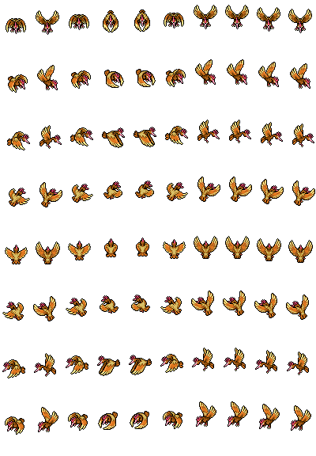
#022大嘴雀一般飞行 #023阿柏蛇毒
#023阿柏蛇毒 #024阿柏怪毒
#024阿柏怪毒 #025皮卡丘电
#025皮卡丘电 #026雷丘电
#026雷丘电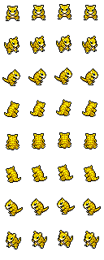
#027穿山鼠地面 #028穿山王地面
#028穿山王地面 #029尼多兰毒
#029尼多兰毒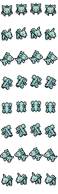
#030尼多娜毒 #031尼多后毒地面
#031尼多后毒地面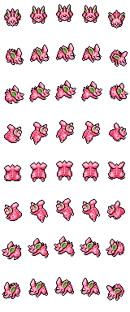
#032尼多朗毒 #033尼多力诺毒
#033尼多力诺毒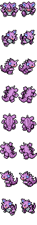
#034尼多王毒地面 #035皮皮妖精
#035皮皮妖精 #036皮可西妖精
#036皮可西妖精 #037六尾火
#037六尾火 #038九尾火
#038九尾火 #039胖丁一般妖精
#039胖丁一般妖精 #040胖可丁一般妖精
#040胖可丁一般妖精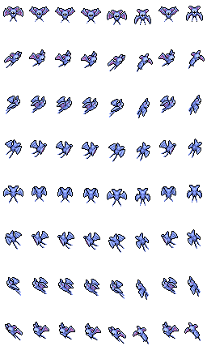
#041超音蝠毒飞行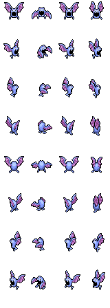
#042大嘴蝠毒飞行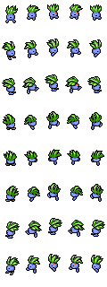
#043走路草草毒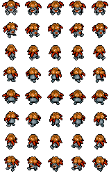
#044臭臭花草毒 #045霸王花草毒
#045霸王花草毒 #046派拉斯虫草
#046派拉斯虫草 #047派拉斯特虫草
#047派拉斯特虫草 #048毛球虫毒
#048毛球虫毒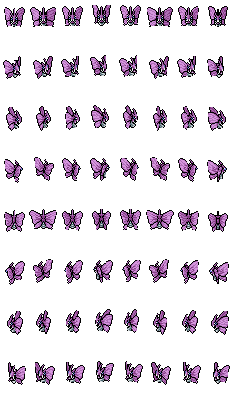
#049摩鲁蛾虫毒 #050地鼠地面
#050地鼠地面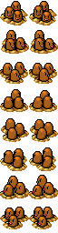
#051三地鼠地面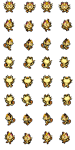
#052喵喵一般 #053猫老大一般
#053猫老大一般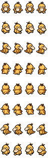
#054可达鸭水最初的伙伴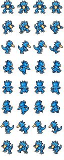
#055哥达鸭水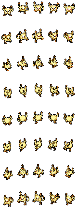
#056猴怪格斗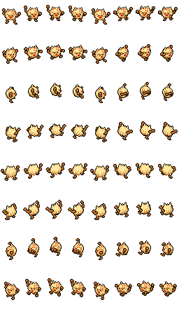
#057火暴猴格斗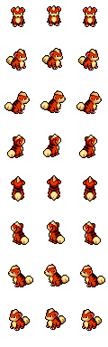
#058卡蒂狗火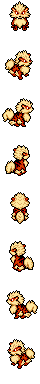
#059风速狗火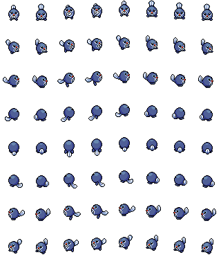
#060蚊香蝌蚪水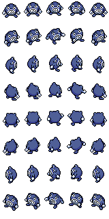
#061蚊香君水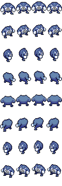
#062蚊香泳士水格斗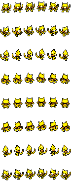
#063凯西超能力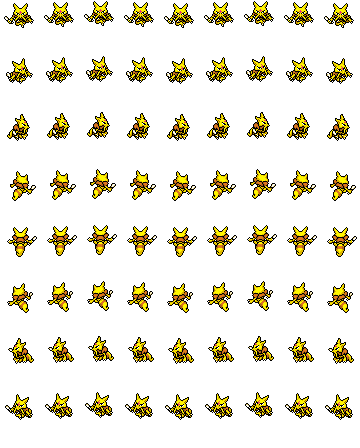
#064勇基拉超能力 #065胡地超能力
#065胡地超能力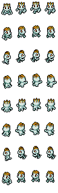
#066腕力格斗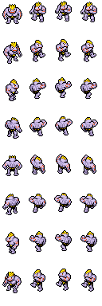
#067豪力格斗 #068怪力格斗
#068怪力格斗 #069喇叭芽草毒
#069喇叭芽草毒 #070口呆花草毒
#070口呆花草毒 #071大食花草毒
#071大食花草毒 #072玛瑙水母水毒
#072玛瑙水母水毒 #073毒刺水母水毒
#073毒刺水母水毒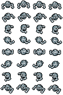
#074小拳石岩石地面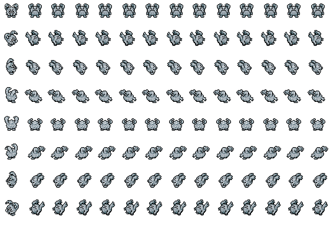
#075隆隆石岩石地面 #076隆隆岩岩石地面
#076隆隆岩岩石地面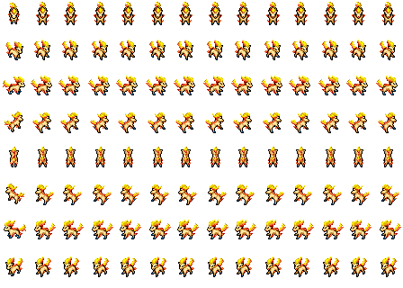
#077小火马火 #078烈焰马火
#078烈焰马火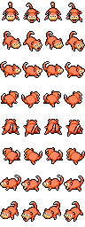
#079呆呆兽水超能力最初的伙伴 #080呆壳兽水超能力
#080呆壳兽水超能力 #081小磁怪电钢
#081小磁怪电钢 #082三合一磁怪电钢
#082三合一磁怪电钢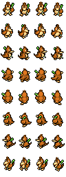
#083大葱鸭一般飞行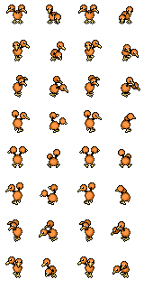
#084嘟嘟一般飞行 #085嘟嘟利一般飞行
#085嘟嘟利一般飞行 #086小海狮水
#086小海狮水 #087白海狮水冰
#087白海狮水冰 #088臭泥毒
#088臭泥毒 #089臭臭泥毒
#089臭臭泥毒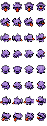
#090大舌贝水 #091刺甲贝水冰
#091刺甲贝水冰 #092鬼斯幽灵毒
#092鬼斯幽灵毒 #093鬼斯通幽灵毒
#093鬼斯通幽灵毒 #094耿鬼幽灵毒
#094耿鬼幽灵毒 #095大岩蛇岩石地面
#095大岩蛇岩石地面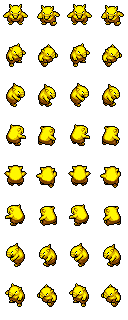
#096催眠貘超能力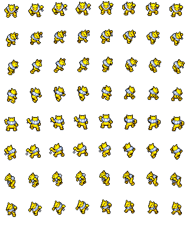
#097引梦貘人超能力 #098大钳蟹水
#098大钳蟹水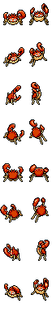
#099巨钳蟹水 #100霹雳电球电
#100霹雳电球电 #101顽皮雷弹电
#101顽皮雷弹电 #102蛋蛋草超能力
#102蛋蛋草超能力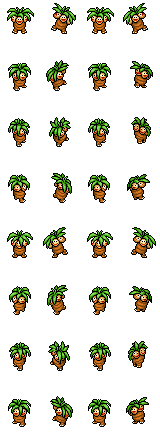
#103椰蛋树草超能力 #104卡拉卡拉地面
#104卡拉卡拉地面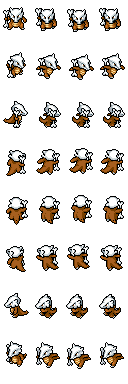
#105嘎啦嘎啦地面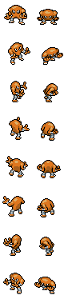
#106飞腿郎格斗 #107快拳郎格斗
#107快拳郎格斗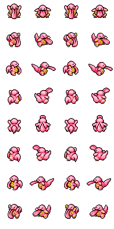
#108大舌头一般 #109瓦斯弹毒
#109瓦斯弹毒 #110双弹瓦斯毒
#110双弹瓦斯毒 #111独角犀牛地面岩石
#111独角犀牛地面岩石 #112钻角犀兽地面岩石
#112钻角犀兽地面岩石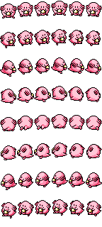
#113吉利蛋一般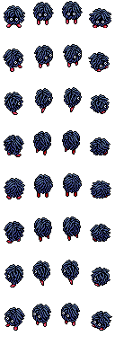
#114蔓藤怪草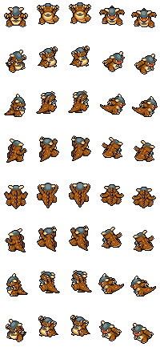
#115袋兽一般- #116墨海马水
 #117海刺龙水
#117海刺龙水- #118角金鱼水
- #119金鱼王水
- #120海星星水
- #121宝石海星水超能力
 #122魔墙人偶超能力妖精
#122魔墙人偶超能力妖精- #123飞天螳螂虫飞行
 #124迷唇姐冰超能力
#124迷唇姐冰超能力 #125电击兽电
#125电击兽电 #126鸭嘴火兽火
#126鸭嘴火兽火- #127凯罗斯虫
- #128肯泰罗一般
- #129鲤鱼王水
- #130暴鲤龙水飞行
 #131拉普拉斯水冰
#131拉普拉斯水冰 #132百变怪一般
#132百变怪一般- #133伊布一般
 #134水伊布水
#134水伊布水- #135雷伊布电
 #136火伊布火
#136火伊布火- #137多边兽一般
 #138菊石兽岩石水
#138菊石兽岩石水 #139多刺菊石兽岩石水
#139多刺菊石兽岩石水- #140化石盔岩石水
 #141镰刀盔岩石水
#141镰刀盔岩石水- #142化石翼龙岩石飞行
 #143卡比兽一般
#143卡比兽一般- #144急冻鸟冰飞行传说
- #145闪电鸟电飞行传说
- #146火焰鸟火飞行传说
- #147迷你龙龙
- #148哈克龙龙
 #149快龙龙飞行
#149快龙龙飞行- #150超梦超能力传说
 #151梦幻超能力传说
#151梦幻超能力传说
城都 第 2 世代 · 100 只
 #152菊草叶草最初的伙伴
#152菊草叶草最初的伙伴 #153月桂叶草
#153月桂叶草 #154大竺葵草
#154大竺葵草- #155火球鼠火最初的伙伴
 #156火岩鼠火
#156火岩鼠火- #157火暴兽火
 #158小锯鳄水最初的伙伴
#158小锯鳄水最初的伙伴 #159蓝鳄水
#159蓝鳄水 #160大力鳄水
#160大力鳄水- #161尾立一般
 #162大尾立一般
#162大尾立一般- #163咕咕一般飞行
- #164猫头夜鹰一般飞行
 #165芭瓢虫虫飞行
#165芭瓢虫虫飞行- #166安瓢虫虫飞行
- #167圆丝蛛虫毒
- #168阿利多斯虫毒
 #169叉字蝠毒飞行
#169叉字蝠毒飞行- #170灯笼鱼水电
- #171电灯怪水电
 #172皮丘电
#172皮丘电- #173皮宝宝妖精
- #174宝宝丁一般妖精
 #175波克比妖精
#175波克比妖精 #176波克基古妖精飞行
#176波克基古妖精飞行- #177天然雀超能力飞行
 #178天然鸟超能力飞行
#178天然鸟超能力飞行- #179咩利羊电
- #180茸茸羊电
- #181电龙电
- #182美丽花草
- #183玛力露水妖精
 #184玛力露丽水妖精
#184玛力露丽水妖精- #185树才怪岩石
- #186蚊香蛙皇水
- #187毽子草草飞行
 #188毽子花草飞行
#188毽子花草飞行- #189毽子棉草飞行
- #190长尾怪手一般
 #191向日种子草
#191向日种子草- #192向日花怪草
 #193蜻蜻蜓虫飞行
#193蜻蜻蜓虫飞行 #194乌波水地面
#194乌波水地面- #195沼王水地面
- #196太阳伊布超能力
- #197月亮伊布恶
- #198黑暗鸦恶飞行
 #199呆呆王水超能力
#199呆呆王水超能力- #200梦妖幽灵
 #201未知图腾超能力
#201未知图腾超能力- #202果然翁超能力
- #203麒麟奇一般超能力
- #204榛果球虫
- #205佛烈托斯虫钢
 #206土龙弟弟一般
#206土龙弟弟一般- #207天蝎地面飞行
- #208大钢蛇钢地面
 #209布鲁妖精
#209布鲁妖精- #210布鲁皇妖精
 #211千针鱼水毒
#211千针鱼水毒 #212巨钳螳螂虫钢
#212巨钳螳螂虫钢- #213壶壶虫岩石
 #214赫拉克罗斯虫格斗
#214赫拉克罗斯虫格斗- #215狃拉恶冰
 #216熊宝宝一般
#216熊宝宝一般- #217圈圈熊一般
- #218熔岩虫火
 #219熔岩蜗牛火岩石
#219熔岩蜗牛火岩石 #220小山猪冰地面
#220小山猪冰地面 #221长毛猪冰地面
#221长毛猪冰地面- #222太阳珊瑚水岩石
- #223铁炮鱼水
- #224章鱼桶水
- #225信使鸟冰飞行
- #226巨翅飞鱼水飞行
- #227盔甲鸟钢飞行
- #228戴鲁比恶火
 #229黑鲁加恶火
#229黑鲁加恶火- #230刺龙王水龙
- #231小小象地面
- #232顿甲地面
 #233多边兽2型一般
#233多边兽2型一般 #234惊角鹿一般
#234惊角鹿一般- #235图图犬一般
 #236无畏小子格斗
#236无畏小子格斗- #237战舞郎格斗
- #238迷唇娃冰超能力
 #239电击怪电
#239电击怪电- #240鸭嘴宝宝火
- #241大奶罐一般
- #242幸福蛋一般
 #243雷公电传说
#243雷公电传说 #244炎帝火传说
#244炎帝火传说 #245水君水传说
#245水君水传说 #246幼基拉斯岩石地面
#246幼基拉斯岩石地面- #247沙基拉斯岩石地面
 #248班基拉斯岩石恶
#248班基拉斯岩石恶- #249洛奇亚超能力飞行传说
 #250凤王火飞行传说
#250凤王火飞行传说- #251时拉比超能力草传说
丰缘 第 3 世代 · 135 只
 #252木守宫草最初的伙伴
#252木守宫草最初的伙伴 #253森林蜥蜴草
#253森林蜥蜴草 #254蜥蜴王草
#254蜥蜴王草 #255火稚鸡火最初的伙伴
#255火稚鸡火最初的伙伴 #256力壮鸡火格斗
#256力壮鸡火格斗- #257火焰鸡火格斗
 #258水跃鱼水最初的伙伴
#258水跃鱼水最初的伙伴- #259沼跃鱼水地面
 #260巨沼怪水地面
#260巨沼怪水地面 #261土狼犬恶
#261土狼犬恶 #262大狼犬恶
#262大狼犬恶- #263蛇纹熊一般
 #264直冲熊一般
#264直冲熊一般 #265刺尾虫虫
#265刺尾虫虫- #266甲壳茧虫
 #267狩猎凤蝶虫飞行
#267狩猎凤蝶虫飞行- #268盾甲茧虫
- #269毒粉蛾虫毒
 #270莲叶童子水草
#270莲叶童子水草 #271莲帽小童水草
#271莲帽小童水草- #272乐天河童水草
- #273橡实果草
- #274长鼻叶草恶
 #275狡猾天狗草恶
#275狡猾天狗草恶- #276傲骨燕一般飞行
 #277大王燕一般飞行
#277大王燕一般飞行- #278长翅鸥水飞行
- #279大嘴鸥水飞行
- #280拉鲁拉丝超能力妖精
- #281奇鲁莉安超能力妖精
- #282沙奈朵超能力妖精
- #283溜溜糖球虫水
 #284雨翅蛾虫飞行
#284雨翅蛾虫飞行 #285蘑蘑菇草
#285蘑蘑菇草 #286斗笠菇草格斗
#286斗笠菇草格斗- #287懒人獭一般
 #288过动猿一般
#288过动猿一般- #289请假王一般
 #290土居忍士虫地面
#290土居忍士虫地面- #291铁面忍者虫飞行
- #292脱壳忍者虫幽灵
- #293咕妞妞一般
- #294吼爆弹一般
 #295爆音怪一般
#295爆音怪一般- #296幕下力士格斗
 #297铁掌力士格斗
#297铁掌力士格斗 #298露力丽一般妖精
#298露力丽一般妖精 #299朝北鼻岩石
#299朝北鼻岩石 #300向尾喵一般
#300向尾喵一般- #301优雅猫一般
 #302勾魂眼恶幽灵
#302勾魂眼恶幽灵- #303大嘴娃钢妖精
 #304可可多拉钢岩石
#304可可多拉钢岩石 #305可多拉钢岩石
#305可多拉钢岩石 #306波士可多拉钢岩石
#306波士可多拉钢岩石- #307玛沙那格斗超能力
- #308恰雷姆格斗超能力
 #309落雷兽电
#309落雷兽电 #310雷电兽电
#310雷电兽电- #311正电拍拍电
 #312负电拍拍电
#312负电拍拍电- #313电萤虫虫
 #314甜甜萤虫
#314甜甜萤虫 #315毒蔷薇草毒
#315毒蔷薇草毒- #316溶食兽毒
 #317吞食兽毒
#317吞食兽毒- #318利牙鱼水恶
 #319巨牙鲨水恶
#319巨牙鲨水恶 #320吼吼鲸水
#320吼吼鲸水 #321吼鲸王水
#321吼鲸王水 #322呆火驼火地面
#322呆火驼火地面 #323喷火驼火地面
#323喷火驼火地面- #324煤炭龟火
 #325跳跳猪超能力
#325跳跳猪超能力- #326噗噗猪超能力
- #327晃晃斑一般
 #328大颚蚁地面
#328大颚蚁地面- #329超音波幼虫地面龙
- #330沙漠蜻蜓地面龙
 #331刺球仙人掌草
#331刺球仙人掌草- #332梦歌仙人掌草恶
- #333青绵鸟一般飞行
- #334七夕青鸟龙飞行
 #335猫鼬斩一般
#335猫鼬斩一般- #336饭匙蛇毒
 #337月石岩石超能力
#337月石岩石超能力- #338太阳岩岩石超能力
- #339泥泥鳅水地面
- #340鲶鱼王水地面
 #341龙虾小兵水
#341龙虾小兵水 #342铁螯龙虾水恶
#342铁螯龙虾水恶 #343天秤偶地面超能力
#343天秤偶地面超能力- #344念力土偶地面超能力
- #345触手百合岩石草
- #346摇篮百合岩石草
 #347太古羽虫岩石虫
#347太古羽虫岩石虫 #348太古盔甲岩石虫
#348太古盔甲岩石虫 #349丑丑鱼水
#349丑丑鱼水 #350美纳斯水
#350美纳斯水 #351飘浮泡泡一般
#351飘浮泡泡一般 #352变隐龙一般
#352变隐龙一般- #353怨影娃娃幽灵
- #354诅咒娃娃幽灵
- #355夜巡灵幽灵
- #356彷徨夜灵幽灵
 #357热带龙草飞行
#357热带龙草飞行- #358风铃铃超能力
 #359阿勃梭鲁恶
#359阿勃梭鲁恶 #360小果然超能力
#360小果然超能力 #361雪童子冰
#361雪童子冰- #362冰鬼护冰
 #363海豹球冰水
#363海豹球冰水 #364海魔狮冰水
#364海魔狮冰水- #365帝牙海狮冰水
- #366珍珠贝水
- #367猎斑鱼水
- #368樱花鱼水
- #369古空棘鱼水岩石
 #370爱心鱼水
#370爱心鱼水 #371宝贝龙龙
#371宝贝龙龙- #372甲壳龙龙
 #373暴飞龙龙飞行
#373暴飞龙龙飞行- #374铁哑铃钢超能力
- #375金属怪钢超能力
- #376巨金怪钢超能力
- #377雷吉洛克岩石传说
- #378雷吉艾斯冰传说
 #379雷吉斯奇鲁钢传说
#379雷吉斯奇鲁钢传说 #380拉帝亚斯龙超能力传说
#380拉帝亚斯龙超能力传说 #381拉帝欧斯龙超能力传说
#381拉帝欧斯龙超能力传说- #382盖欧卡水传说
- #383固拉多地面传说
- #384烈空坐龙飞行传说
- #385基拉祈钢超能力传说
 #386代欧奇希斯超能力传说
#386代欧奇希斯超能力传说
神奥 第 4 世代 · 107 只
- #387草苗龟草最初的伙伴
 #388树林龟草
#388树林龟草- #389土台龟草地面
 #390小火焰猴火最初的伙伴
#390小火焰猴火最初的伙伴 #391猛火猴火格斗
#391猛火猴火格斗 #392烈焰猴火格斗
#392烈焰猴火格斗 #393波加曼水最初的伙伴
#393波加曼水最初的伙伴 #394波皇子水
#394波皇子水- #395帝王拿波水钢
- #396姆克儿一般飞行
- #397姆克鸟一般飞行
- #398姆克鹰一般飞行
 #399大牙狸一般
#399大牙狸一般 #400大尾狸一般水
#400大尾狸一般水- #401圆法师虫
- #402音箱蟀虫
 #403小猫怪电
#403小猫怪电 #404勒克猫电
#404勒克猫电 #405伦琴猫电
#405伦琴猫电- #406含羞苞草毒
 #407罗丝雷朵草毒
#407罗丝雷朵草毒 #408头盖龙岩石
#408头盖龙岩石 #409战槌龙岩石
#409战槌龙岩石- #410盾甲龙岩石钢
 #411护城龙岩石钢
#411护城龙岩石钢- #412结草儿虫
- #413结草贵妇虫草
 #414绅士蛾虫飞行
#414绅士蛾虫飞行 #415三蜜蜂虫飞行
#415三蜜蜂虫飞行- #416蜂女王虫飞行
 #417帕奇利兹电
#417帕奇利兹电 #418泳圈鼬水
#418泳圈鼬水- #419浮潜鼬水
 #420樱花宝草
#420樱花宝草- #421樱花儿草
 #422无壳海兔水
#422无壳海兔水- #423海兔兽水地面
 #424双尾怪手一般
#424双尾怪手一般- #425飘飘球幽灵飞行
 #426随风球幽灵飞行
#426随风球幽灵飞行- #427卷卷耳一般
 #428长耳兔一般
#428长耳兔一般- #429梦妖魔幽灵
- #430乌鸦头头恶飞行
 #431魅力喵一般
#431魅力喵一般 #432东施喵一般
#432东施喵一般- #433铃铛响超能力
 #434臭鼬噗毒恶
#434臭鼬噗毒恶 #435坦克臭鼬毒恶
#435坦克臭鼬毒恶 #436铜镜怪钢超能力
#436铜镜怪钢超能力- #437青铜钟钢超能力
 #438盆才怪岩石
#438盆才怪岩石 #439魔尼尼超能力妖精
#439魔尼尼超能力妖精 #440小福蛋一般
#440小福蛋一般- #441聒噪鸟一般飞行
- #442花岩怪幽灵恶
- #443圆陆鲨龙地面
 #444尖牙陆鲨龙地面
#444尖牙陆鲨龙地面- #445烈咬陆鲨龙地面
- #446小卡比兽一般
- #447利欧路格斗
- #448路卡利欧格斗钢
 #449沙河马地面
#449沙河马地面 #450河马兽地面
#450河马兽地面 #451钳尾蝎毒虫
#451钳尾蝎毒虫- #452龙王蝎毒恶
 #453不良蛙毒格斗
#453不良蛙毒格斗- #454毒骷蛙毒格斗
 #455尖牙笼草
#455尖牙笼草- #456荧光鱼水
- #457霓虹鱼水
 #458小球飞鱼水飞行
#458小球飞鱼水飞行- #459雪笠怪草冰
- #460暴雪王草冰
 #461玛狃拉恶冰
#461玛狃拉恶冰 #462自爆磁怪电钢
#462自爆磁怪电钢- #463大舌舔一般
- #464超甲狂犀地面岩石
- #465巨蔓藤草
 #466电击魔兽电
#466电击魔兽电 #467鸭嘴炎兽火
#467鸭嘴炎兽火- #468波克基斯妖精飞行
 #469远古巨蜓虫飞行
#469远古巨蜓虫飞行 #470叶伊布草
#470叶伊布草- #471冰伊布冰
 #472天蝎王地面飞行
#472天蝎王地面飞行 #473象牙猪冰地面
#473象牙猪冰地面 #474多边兽乙型一般
#474多边兽乙型一般 #475艾路雷朵超能力格斗
#475艾路雷朵超能力格斗- #476大朝北鼻岩石钢
 #477黑夜魔灵幽灵
#477黑夜魔灵幽灵 #478雪妖女冰幽灵
#478雪妖女冰幽灵 #479洛托姆电幽灵
#479洛托姆电幽灵- #480由克希超能力传说
 #481艾姆利多超能力传说
#481艾姆利多超能力传说- #482亚克诺姆超能力传说
- #483帝牙卢卡钢龙传说
 #484帕路奇亚水龙传说
#484帕路奇亚水龙传说 #485席多蓝恩火钢传说
#485席多蓝恩火钢传说- #486雷吉奇卡斯一般传说
- #487骑拉帝纳幽灵龙传说
 #488克雷色利亚超能力传说
#488克雷色利亚超能力传说- #489霏欧纳水传说
- #490玛纳霏水传说
- #491达克莱伊恶传说
 #492谢米草传说
#492谢米草传说- #493阿尔宙斯一般传说
合众 第 5 世代 · 141 只
- #494比克提尼超能力火传说
- #495藤藤蛇草最初的伙伴
 #496青藤蛇草
#496青藤蛇草 #497君主蛇草
#497君主蛇草 #498暖暖猪火最初的伙伴
#498暖暖猪火最初的伙伴 #499炒炒猪火格斗
#499炒炒猪火格斗 #500炎武王火格斗
#500炎武王火格斗 #501水水獭水最初的伙伴
#501水水獭水最初的伙伴- #502双刃丸水
 #503大剑鬼水
#503大剑鬼水- #504探探鼠一般
- #505步哨鼠一般
 #506小约克一般
#506小约克一般- #507哈约克一般
 #508长毛狗一般
#508长毛狗一般 #509扒手猫恶
#509扒手猫恶- #510酷豹恶
 #511花椰猴草
#511花椰猴草- #512花椰猿草
- #513爆香猴火
- #515冷水猴水
 #517食梦梦超能力
#517食梦梦超能力 #518梦梦蚀超能力
#518梦梦蚀超能力 #519豆豆鸽一般飞行
#519豆豆鸽一般飞行- #521高傲雉鸡一般飞行
- #524石丸子岩石
- #525地幔岩岩石
- #526庞岩怪岩石
 #527滚滚蝙蝠超能力飞行
#527滚滚蝙蝠超能力飞行- #528心蝙蝠超能力飞行
 #529螺钉地鼠地面
#529螺钉地鼠地面- #530龙头地鼠地面钢
 #531差不多娃娃一般
#531差不多娃娃一般- #532搬运小匠格斗
 #533铁骨土人格斗
#533铁骨土人格斗- #534修建老匠格斗
- #535圆蝌蚪水
- #536蓝蟾蜍水地面
- #537蟾蜍王水地面
- #539打击鬼格斗
 #540虫宝包虫草
#540虫宝包虫草- #541宝包茧虫草
 #542保姆虫虫草
#542保姆虫虫草- #543百足蜈蚣虫毒
- #544车轮球虫毒
 #545蜈蚣王虫毒
#545蜈蚣王虫毒- #546木棉球草妖精
- #547风妖精草妖精
 #548百合根娃娃草
#548百合根娃娃草 #549裙儿小姐草
#549裙儿小姐草 #550野蛮鲈鱼水
#550野蛮鲈鱼水- #551黑眼鳄地面恶
- #552混混鳄地面恶
- #553流氓鳄地面恶
- #554火红不倒翁火
 #555达摩狒狒火
#555达摩狒狒火 #556沙铃仙人掌草
#556沙铃仙人掌草- #557石居蟹虫岩石
- #559滑滑小子恶格斗
 #560头巾混混恶格斗
#560头巾混混恶格斗 #561象征鸟超能力飞行
#561象征鸟超能力飞行- #562哭哭面具幽灵
- #563迭失棺幽灵
 #566始祖小鸟岩石飞行
#566始祖小鸟岩石飞行 #567始祖大鸟岩石飞行
#567始祖大鸟岩石飞行- #568破破袋毒
 #569灰尘山毒
#569灰尘山毒- #570索罗亚恶
 #571索罗亚克恶
#571索罗亚克恶 #572泡沫栗鼠一般
#572泡沫栗鼠一般 #573奇诺栗鼠一般
#573奇诺栗鼠一般- #574哥德宝宝超能力
- #575哥德小童超能力
- #576哥德小姐超能力
- #577单卵细胞球超能力
 #578双卵细胞球超能力
#578双卵细胞球超能力 #579人造细胞卵超能力
#579人造细胞卵超能力 #580鸭宝宝水飞行
#580鸭宝宝水飞行- #581舞天鹅水飞行
- #582迷你冰冰
 #583多多冰冰
#583多多冰冰- #584双倍多多冰冰
- #585四季鹿一般草
- #586萌芽鹿一般草
- #587电飞鼠电飞行
 #588盖盖虫虫
#588盖盖虫虫 #589骑士蜗牛虫钢
#589骑士蜗牛虫钢- #590哎呀球菇草毒
- #594保姆曼波水
 #595电电虫虫电
#595电电虫虫电- #596电蜘蛛虫电
- #597种子铁球草钢
- #598坚果哑铃草钢
 #599齿轮儿钢
#599齿轮儿钢- #600齿轮组钢
 #601齿轮怪钢
#601齿轮怪钢- #602麻麻小鱼电
- #603麻麻鳗电
 #604麻麻鳗鱼王电
#604麻麻鳗鱼王电 #605小灰怪超能力
#605小灰怪超能力 #606大宇怪超能力
#606大宇怪超能力- #607烛光灵幽灵火
 #608灯火幽灵幽灵火
#608灯火幽灵幽灵火- #609水晶灯火灵幽灵火
 #610牙牙龙
#610牙牙龙- #611斧牙龙龙
 #612双斧战龙龙
#612双斧战龙龙 #613喷嚏熊冰
#613喷嚏熊冰 #614冻原熊冰
#614冻原熊冰 #615几何雪花冰
#615几何雪花冰 #617敏捷虫虫
#617敏捷虫虫- #619功夫鼬格斗
 #620师父鼬格斗
#620师父鼬格斗 #621赤面龙龙
#621赤面龙龙- #622泥偶小人地面幽灵
 #623泥偶巨人地面幽灵
#623泥偶巨人地面幽灵 #624驹刀小兵恶钢
#624驹刀小兵恶钢 #625劈斩司令恶钢
#625劈斩司令恶钢 #627毛头小鹰一般飞行
#627毛头小鹰一般飞行- #628勇士雄鹰一般飞行
 #629秃鹰丫头恶飞行
#629秃鹰丫头恶飞行 #630秃鹰娜恶飞行
#630秃鹰娜恶飞行- #631熔蚁兽火
 #632铁蚁虫钢
#632铁蚁虫钢- #633单首龙恶龙
 #634双首暴龙恶龙
#634双首暴龙恶龙 #635三首恶龙恶龙
#635三首恶龙恶龙 #636燃烧虫虫火
#636燃烧虫虫火 #637火神蛾虫火
#637火神蛾虫火- #638勾帕路翁钢格斗传说
 #639代拉基翁岩石格斗传说
#639代拉基翁岩石格斗传说- #640毕力吉翁草格斗传说
 #641龙卷云飞行传说
#641龙卷云飞行传说- #642雷电云电飞行传说
 #643莱希拉姆龙火传说
#643莱希拉姆龙火传说 #644捷克罗姆龙电传说
#644捷克罗姆龙电传说- #645土地云地面飞行传说
 #646酋雷姆龙冰传说
#646酋雷姆龙冰传说 #647凯路迪欧水格斗传说
#647凯路迪欧水格斗传说 #648美洛耶塔一般超能力传说
#648美洛耶塔一般超能力传说- #649盖诺赛克特虫钢传说
卡洛斯 第 6 世代 · 70 只
- #650哈力栗草最初的伙伴
 #651胖胖哈力草
#651胖胖哈力草- #652布里卡隆草格斗
- #653火狐狸火最初的伙伴
- #654长尾火狐火
- #655妖火红狐火超能力
 #656呱呱泡蛙水最初的伙伴
#656呱呱泡蛙水最初的伙伴- #657呱头蛙水
- #658甲贺忍蛙水恶
- #659掘掘兔一般
- #660掘地兔一般地面
- #661小箭雀一般飞行
 #662火箭雀火飞行
#662火箭雀火飞行 #663烈箭鹰火飞行
#663烈箭鹰火飞行 #664粉蝶虫虫
#664粉蝶虫虫- #665粉蝶蛹虫
 #666彩粉蝶虫飞行
#666彩粉蝶虫飞行- #667小狮狮火一般
- #669花蓓蓓妖精
- #670花叶蒂妖精
 #671花洁夫人妖精
#671花洁夫人妖精- #672坐骑小羊草
- #673坐骑山羊草
 #674顽皮熊猫格斗
#674顽皮熊猫格斗 #675霸道熊猫格斗恶
#675霸道熊猫格斗恶- #676多丽米亚一般
 #677妙喵超能力
#677妙喵超能力- #678超能妙喵超能力
 #679独剑鞘钢幽灵
#679独剑鞘钢幽灵 #680双剑鞘钢幽灵
#680双剑鞘钢幽灵- #681坚盾剑怪钢幽灵
- #682粉香香妖精
- #684绵绵泡芙妖精
- #685胖甜妮妖精
- #686好啦鱿恶超能力
- #687乌贼王恶超能力
 #688龟脚脚岩石水
#688龟脚脚岩石水- #689龟足巨铠岩石水
- #690垃垃藻毒水
 #691毒藻龙毒龙
#691毒藻龙毒龙 #692铁臂枪虾水
#692铁臂枪虾水- #693钢炮臂虾水
 #694伞电蜥电一般
#694伞电蜥电一般- #695光电伞蜥电一般
- #696宝宝暴龙岩石龙
 #697怪颚龙岩石龙
#697怪颚龙岩石龙 #698冰雪龙岩石冰
#698冰雪龙岩石冰- #699冰雪巨龙岩石冰
- #700仙子伊布妖精
 #701摔角鹰人格斗飞行
#701摔角鹰人格斗飞行 #702咚咚鼠电妖精
#702咚咚鼠电妖精 #703小碎钻岩石妖精
#703小碎钻岩石妖精 #704黏黏宝龙
#704黏黏宝龙 #705黏美儿龙
#705黏美儿龙- #706黏美龙龙
- #707钥圈儿钢妖精
 #708小木灵幽灵草
#708小木灵幽灵草 #709朽木妖幽灵草
#709朽木妖幽灵草- #710南瓜精幽灵草
 #711南瓜怪人幽灵草
#711南瓜怪人幽灵草- #712冰宝冰
- #713冰岩怪冰
- #714嗡蝠飞行龙
- #715音波龙飞行龙
 #716哲尔尼亚斯妖精传说
#716哲尔尼亚斯妖精传说- #717伊裴尔塔尔恶飞行传说
 #718基格尔德龙地面传说
#718基格尔德龙地面传说 #719蒂安希岩石妖精传说
#719蒂安希岩石妖精传说- #720胡帕超能力幽灵传说
 #721波尔凯尼恩火水传说
#721波尔凯尼恩火水传说
阿罗拉 第 7 世代 · 83 只
 #722木木枭草飞行最初的伙伴
#722木木枭草飞行最初的伙伴- #723投羽枭草飞行
 #724狙射树枭草幽灵
#724狙射树枭草幽灵 #725火斑喵火最初的伙伴
#725火斑喵火最初的伙伴- #726炎热喵火
- #727炽焰咆哮虎火恶
- #728球球海狮水最初的伙伴
- #729花漾海狮水
 #730西狮海壬水妖精
#730西狮海壬水妖精 #731小笃儿一般飞行
#731小笃儿一般飞行- #734猫鼬少一般
- #736强颚鸡母虫虫
- #737虫电宝虫电
- #738锹农炮虫虫电
 #739好胜蟹格斗
#739好胜蟹格斗- #740好胜毛蟹格斗冰
 #741花舞鸟火飞行
#741花舞鸟火飞行- #742萌虻虫妖精
- #743蝶结萌虻虫妖精
 #744岩狗狗岩石
#744岩狗狗岩石 #745鬃岩狼人岩石
#745鬃岩狼人岩石 #746弱丁鱼水
#746弱丁鱼水 #747好坏星毒水
#747好坏星毒水 #748超坏星毒水
#748超坏星毒水 #749泥驴仔地面
#749泥驴仔地面 #750重泥挽马地面
#750重泥挽马地面 #751滴蛛水虫
#751滴蛛水虫- #752滴蛛霸水虫
- #753伪螳草草
- #754兰螳花草
- #755睡睡菇草妖精
 #757夜盗火蜥毒火
#757夜盗火蜥毒火- #758焰后蜥毒火
 #759童偶熊一般格斗
#759童偶熊一般格斗 #760穿着熊一般格斗
#760穿着熊一般格斗 #761甜竹竹草
#761甜竹竹草 #762甜舞妮草
#762甜舞妮草 #763甜冷美后草
#763甜冷美后草 #764花疗环环妖精
#764花疗环环妖精 #766投掷猴格斗
#766投掷猴格斗- #767胆小虫虫水
 #768具甲武者虫水
#768具甲武者虫水 #769沙丘娃幽灵地面
#769沙丘娃幽灵地面 #770噬沙堡爷幽灵地面
#770噬沙堡爷幽灵地面- #771拳海参水
 #772属性：空一般传说
#772属性：空一般传说- #773银伴战兽一般传说
- #774小陨星岩石飞行
- #775树枕尾熊一般
 #776爆焰龟兽火龙
#776爆焰龟兽火龙 #777托戈德玛尔电钢
#777托戈德玛尔电钢 #778谜拟丘幽灵妖精
#778谜拟丘幽灵妖精- #779磨牙彩皮鱼水超能力
- #780老翁龙一般龙
 #781破破舵轮幽灵草
#781破破舵轮幽灵草- #782心鳞宝龙
- #783鳞甲龙龙格斗
- #784杖尾鳞甲龙龙格斗
 #785卡璞・鸣鸣电妖精传说
#785卡璞・鸣鸣电妖精传说 #786卡璞・蝶蝶超能力妖精传说
#786卡璞・蝶蝶超能力妖精传说 #787卡璞・哞哞草妖精传说
#787卡璞・哞哞草妖精传说 #788卡璞・鳍鳍水妖精传说
#788卡璞・鳍鳍水妖精传说 #789科斯莫古超能力传说
#789科斯莫古超能力传说 #790科斯莫姆超能力传说
#790科斯莫姆超能力传说 #791索尔迦雷欧超能力钢传说
#791索尔迦雷欧超能力钢传说- #792露奈雅拉超能力幽灵传说
- #793虚吾伊德岩石毒
 #794爆肌蚊虫格斗
#794爆肌蚊虫格斗- #795费洛美螂虫格斗
- #796电束木电
- #797铁火辉夜钢飞行
- #798纸御剑草钢
 #799恶食大王恶龙
#799恶食大王恶龙 #800奈克洛兹玛超能力传说
#800奈克洛兹玛超能力传说 #801玛机雅娜钢妖精传说
#801玛机雅娜钢妖精传说 #802玛夏多格斗幽灵传说
#802玛夏多格斗幽灵传说- #803毒贝比毒
 #804四颚针龙毒龙
#804四颚针龙毒龙 #805垒磊石岩石钢
#805垒磊石岩石钢 #806砰头小丑火幽灵
#806砰头小丑火幽灵- #807捷拉奥拉电传说
 #808美录坦钢传说
#808美录坦钢传说- #809美录梅塔钢传说
伽勒尔 第 8 世代 · 87 只
 #810敲音猴草最初的伙伴
#810敲音猴草最初的伙伴 #811啪咚猴草
#811啪咚猴草 #812轰擂金刚猩草
#812轰擂金刚猩草 #813炎兔儿火最初的伙伴
#813炎兔儿火最初的伙伴 #814腾蹴小将火
#814腾蹴小将火- #815闪焰王牌火
- #816泪眼蜥水最初的伙伴
- #817变涩蜥水
- #818千面避役水
 #819贪心栗鼠一般
#819贪心栗鼠一般 #820藏饱栗鼠一般
#820藏饱栗鼠一般- #821稚山雀飞行
- #822蓝鸦飞行
 #823钢铠鸦飞行钢
#823钢铠鸦飞行钢 #824索侦虫虫
#824索侦虫虫- #825天罩虫虫超能力
- #826以欧路普虫超能力
 #827狡小狐恶
#827狡小狐恶 #828猾大狐恶
#828猾大狐恶- #829幼棉棉草
- #830白蓬蓬草
 #831毛辫羊一般
#831毛辫羊一般 #832毛毛角羊一般
#832毛毛角羊一般 #833咬咬龟水
#833咬咬龟水 #834暴噬龟水岩石
#834暴噬龟水岩石- #835来电汪电
- #836逐电犬电
- #840啃果虫草龙
- #841苹裹龙草龙
- #842丰蜜龙草龙
- #843沙包蛇地面
- #844沙螺蟒地面
- #845古月鸟飞行水
- #846刺梭鱼水
- #847戽斗尖梭水
 #848电音婴电毒
#848电音婴电毒 #849颤弦蝾螈电毒
#849颤弦蝾螈电毒- #850烧火蚣火虫
- #851焚焰蚣火虫
 #852拳拳蛸格斗
#852拳拳蛸格斗- #853八爪武师格斗
 #854来悲茶幽灵
#854来悲茶幽灵- #855怖思壶幽灵
 #856迷布莉姆超能力
#856迷布莉姆超能力- #857提布莉姆超能力
- #858布莉姆温超能力妖精
 #859捣蛋小妖恶妖精
#859捣蛋小妖恶妖精- #860诈唬魔恶妖精
- #861长毛巨魔恶妖精
- #862堵拦熊恶一般
 #863喵头目钢
#863喵头目钢 #864魔灵珊瑚幽灵
#864魔灵珊瑚幽灵 #867迭失板地面幽灵
#867迭失板地面幽灵- #868小仙奶妖精
 #869霜奶仙妖精
#869霜奶仙妖精 #871啪嚓海胆电
#871啪嚓海胆电- #872雪吞虫冰虫
 #873雪绒蛾冰虫
#873雪绒蛾冰虫 #874巨石丁岩石
#874巨石丁岩石- #875冰砌鹅冰
- #876爱管侍超能力一般
- #877莫鲁贝可电恶
- #880雷鸟龙电龙
 #881雷鸟海兽电冰
#881雷鸟海兽电冰 #882鳃鱼龙水龙
#882鳃鱼龙水龙 #883鳃鱼海兽水冰
#883鳃鱼海兽水冰- #884铝钢龙钢龙
 #885多龙梅西亚龙幽灵
#885多龙梅西亚龙幽灵 #886多龙奇龙幽灵
#886多龙奇龙幽灵- #887多龙巴鲁托龙幽灵
 #888苍响妖精传说
#888苍响妖精传说 #889藏玛然特格斗传说
#889藏玛然特格斗传说 #890无极汰那毒龙传说
#890无极汰那毒龙传说- #891熊徒弟格斗传说
 #892武道熊师格斗恶传说
#892武道熊师格斗恶传说- #894雷吉艾勒奇电传说
- #895雷吉铎拉戈龙传说
 #896雪暴马冰传说
#896雪暴马冰传说- #897灵幽马幽灵传说
- #898蕾冠王超能力草传说
 #899诡角鹿一般超能力
#899诡角鹿一般超能力- #900劈斧螳螂虫岩石
- #901月月熊地面一般
- #902幽尾玄鱼水幽灵
 #903大狃拉格斗毒
#903大狃拉格斗毒 #904万针鱼恶毒
#904万针鱼恶毒 #905眷恋云妖精飞行传说
#905眷恋云妖精飞行传说
帕底亚 第 9 世代 · 92 只
 #906新叶喵草最初的伙伴
#906新叶喵草最初的伙伴 #907蒂蕾喵草
#907蒂蕾喵草- #908魔幻假面喵草恶
- #909呆火鳄火最初的伙伴
- #910炙烫鳄火
- #911骨纹巨声鳄火幽灵
- #912润水鸭水最初的伙伴
 #913涌跃鸭水
#913涌跃鸭水- #914狂欢浪舞鸭水格斗
 #915爱吃豚一般
#915爱吃豚一般- #916飘香豚一般
 #917团珠蛛虫
#917团珠蛛虫- #918操陷蛛虫
- #919豆蟋蟀虫
- #920烈腿蝗虫恶
- #921布拨电
- #922布土拨电格斗
- #923巴布土拨电格斗
- #924一对鼠一般
 #925一家鼠一般
#925一家鼠一般- #926狗仔包妖精
- #927麻花犬妖精
 #928迷你芙草一般
#928迷你芙草一般- #930奥利瓦草一般
- #932盐石宝岩石
- #933盐石垒岩石
- #934盐石巨灵岩石
- #935炭小侍火
- #936红莲铠骑火超能力
 #937苍炎刃鬼火幽灵
#937苍炎刃鬼火幽灵 #938光蚪仔电
#938光蚪仔电 #939电肚蛙电
#939电肚蛙电- #940电海燕电飞行
 #941大电海燕电飞行
#941大电海燕电飞行- #946纳噬草草幽灵
 #951热辣娃草
#951热辣娃草 #952狠辣椒草火
#952狠辣椒草火- #953虫滚泥虫
- #955飘飘雏超能力
- #957小锻匠妖精钢
- #958巧锻匠妖精钢
 #959巨锻匠妖精钢
#959巨锻匠妖精钢- #960海地鼠水
 #961三海地鼠水
#961三海地鼠水 #963波普海豚水
#963波普海豚水- #964海豚侠水
- #965噗隆隆钢毒
- #966普隆隆姆钢毒
- #967摩托蜥龙一般
- #968拖拖蚓钢
- #969晶光芽岩石毒
 #970晶光花岩石毒
#970晶光花岩石毒- #971墓仔狗幽灵
 #972墓扬犬幽灵
#972墓扬犬幽灵 #974走鲸冰
#974走鲸冰 #975浩大鲸冰
#975浩大鲸冰 #976轻身鳕水超能力
#976轻身鳕水超能力- #977吃吼霸水
- #978米立龙龙水
- #979弃世猴格斗幽灵
- #980土王毒地面
 #981奇麒麟一般超能力
#981奇麒麟一般超能力 #982土龙节节一般
#982土龙节节一般- #983仆刀将军恶钢
 #984雄伟牙地面格斗
#984雄伟牙地面格斗- #985吼叫尾妖精超能力
- #987振翼发幽灵妖精
- #988爬地翅虫格斗
- #989沙铁皮电地面
 #991铁包袱冰水
#991铁包袱冰水 #992铁臂膀格斗电
#992铁臂膀格斗电 #994铁毒蛾火毒
#994铁毒蛾火毒 #995铁荆棘岩石电
#995铁荆棘岩石电- #996凉脊龙龙冰
 #997冻脊龙龙冰
#997冻脊龙龙冰 #998戟脊龙龙冰
#998戟脊龙龙冰 #1000赛富豪钢幽灵
#1000赛富豪钢幽灵 #1004古玉鱼恶火传说
#1004古玉鱼恶火传说- #1005轰鸣月龙恶
- #1006铁武者妖精格斗
- #1007故勒顿格斗龙传说
 #1009波荡水水龙
#1009波荡水水龙- #1010铁斑叶草超能力
 #1011裹蜜虫草龙
#1011裹蜜虫草龙 #1012斯魔茶草幽灵
#1012斯魔茶草幽灵- #1013来悲粗茶草幽灵
- #1015愿增猿毒超能力传说
- #1016吉雉鸡毒妖精传说
- #1017厄诡椪草传说
- #1018铝钢桥龙钢龙
- #1019蜜集大蛇草龙
 #1024太乐巴戈斯一般传说
#1024太乐巴戈斯一般传说